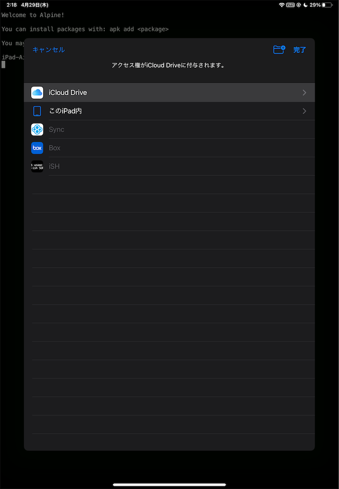
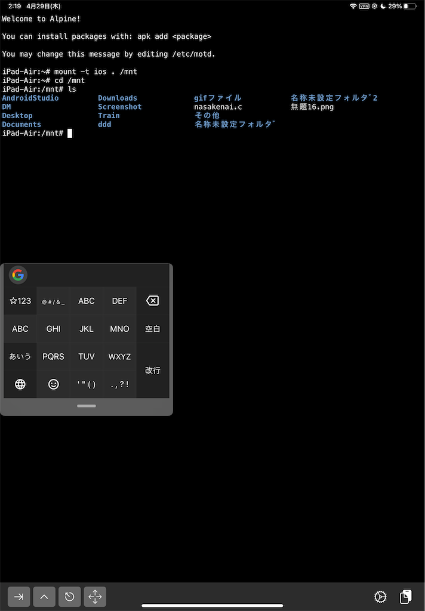

SE辞めた/Kotlin/Python/Hugo/Obsidian
好きなもの: OSS、個人サイト、クロスプラットフォーム
嫌いなもの: サブスク、いかがでしたかブログ、ビッグテックの囲い込み
生息地: mastodon

iOS用のシェルといえばiSHですが、iCloud Driveのファイルにも簡単にアクセスできるみたいですね
mount -t ios . /mnt

マウント先をiCloud Driveにして、完了を押す
ここで他の場所を選んだら多分そこがマウントされるので、iCloud Drive以外も使えそう
cdしてlsしたらちゃんとiCloud Driveの中身も見えました

cpしたらiCloudからファイルのコピーも出来たので、最低限の事はできそうですね
SE辞めた/Kotlin/Python/Hugo/Obsidian
好きなもの: OSS、個人サイト、クロスプラットフォーム
嫌いなもの: サブスク、いかがでしたかブログ、ビッグテックの囲い込み
生息地: mastodon